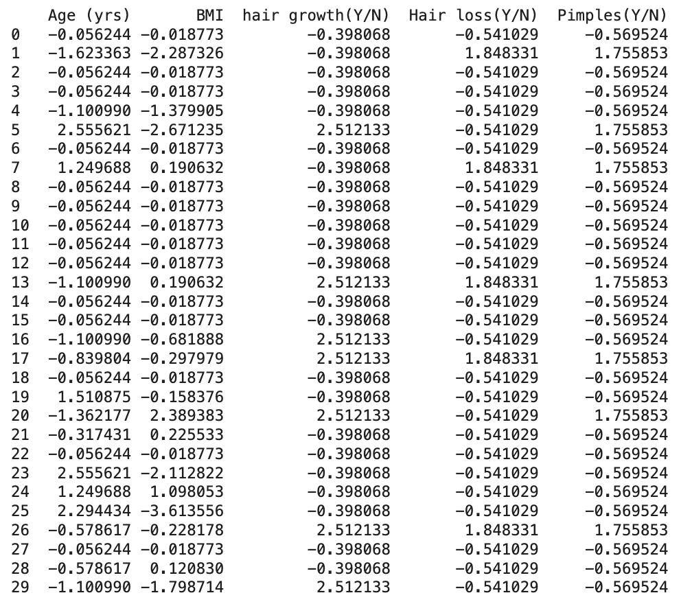
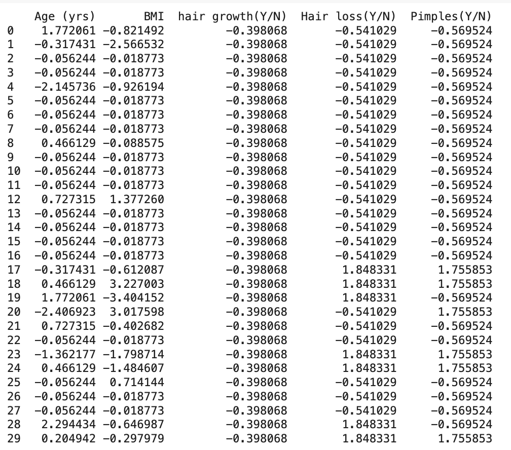
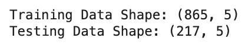

üî∑ Overview: What is a Support Vector Machine (SVM)?
A Support Vector Machine (SVM) is a supervised machine learning algorithm used for classification tasks.
Its main goal is to find the optimal boundary (called a hyperplane) that separates different classes of data points with the maximum margin — the largest distance possible from the nearest points of each class.
In two dimensions, this boundary is a straight line; in three dimensions, it is a flat plane; and in higher dimensions, it becomes a hyperplane.
SVMs are effective because they focus only on the most important data points — called support vectors — that lie closest to the boundary, ensuring the model is robust and not easily influenced by outliers.
When the data is perfectly linearly separable, SVM draws a straight line to divide the classes.
However, if the data is not linearly separable (i.e., classes overlap or curve around each other), SVMs can still find a separator by using special mathematical techniques called kernels that project the data into higher dimensions.
Thanks to their versatility and strong theoretical foundation, SVMs are widely used for tasks such as image recognition, text classification, and medical diagnosis, especially when the number of features is large compared to the number of data points.
üîµ Why SVMs are Linear Separators
Support Vector Machines (SVMs) are powerful algorithms that aim to find the best boundary, or hyperplane, that separates two classes of data points.
In their simplest form, SVMs work by drawing a straight line (in 2D) or a flat hyperplane (in higher dimensions) that divides the data into two groups with the maximum possible margin between them.
The reason they are called "linear separators" is because the decision boundary is a straight line — it is based on a simple linear equation of the form w·x + b = 0, where w is the weight vector and b is the bias.
SVMs focus only on the critical points (called support vectors) that are closest to the boundary, ensuring the separation is as wide and robust as possible.
üü£ The Importance of Dot Product in Kernels
The dot product (also called inner product) is at the core of how SVMs operate, especially when using kernels.
In simple linear SVMs, the dot product measures the similarity between two points by calculating the angle between them.
When we use kernels to create nonlinear boundaries, we are essentially replacing the standard dot product with a new function that computes similarity in a higher-dimensional space — without ever having to compute the coordinates directly!
This is known as the kernel trick. Instead of manually transforming the data into higher dimensions, the kernel trick allows SVMs to still use the dot product idea but in a more complex space.
This makes it possible to separate even highly tangled data in lower dimensions by projecting it into a space where a linear separator is possible.
üîÑ Polynomial Kernel Mapping Example
To understand how kernels transform data, we manually mapped a 2D point (2, 3) into a 6D space using a Polynomial Kernel with constant r = 1 and degree d = 2.
This mapping expands the input features into additional higher-order terms, enabling the Support Vector Machine (SVM) to discover more complex boundaries that are not visible in the original space.
SVMs with a Linear Kernel create a straight-line separator between classes. This approach works well when the data is linearly separable.
When the data is not linearly separable, a Polynomial Kernel transforms the input space so that a curved boundary can separate the classes more effectively.
üìä Access Full SVM Code on GitHub
You can view the full SVM implementation code, including data cleaning, splitting, model training with various kernels, and evaluation, through the link below:
Support Vector Machine (SVM) Data Preparation & Code
1️⃣ Core PCOS Dataset Preparation
For the Support Vector Machine (SVM) implementation, we worked with the Core PCOS Cleaned Dataset.
The process involved carefully preparing the data to ensure it was fully numeric and labeled, making it suitable for SVM modeling.
1️⃣ Cleaned Dataset
The preprocessing steps included:
Stripping unnecessary whitespace from column names.
Selecting important features such as Age (yrs), BMI, hair growth, Hair loss, Pimples, and the target PCOS (Y/N).
Below is a snapshot of the before cleaning dataset:
Below is a snapshot of the cleaned dataset, prepared for SVM training:
2️⃣ Sample Train and Test Data
After cleaning, the data was split into 80% training and 20% testing sets using scikit-learn's train_test_split.
This ensures a disjoint split between training and testing data, critical for fair model evaluation.


The output below confirms the shape of the training and testing datasets:

üîé SVM Model Training and Results
After preparing the labeled numeric dataset, we trained three different Support Vector Machine (SVM) classifiers using Linear, Polynomial, and RBF (Radial Basis Function) kernels.
For each model, we tested three different C values (0.1, 1, 10) to observe how regularization strength affects model performance. Accuracy, confusion matrices, and classification reports were evaluated.
1️⃣ Linear Kernel
The Linear Kernel SVM attempts to separate the classes using a straight hyperplane.
It is best suited for linearly separable data. Across all C values, the Linear Kernel achieved strong and stable results:
C=0.1: Accuracy = 75%
C=1: Accuracy = 75%
C=10: Accuracy = 75%
The model consistently predicted the majority class (non-PCOS) correctly but exhibited moderate false negatives, indicating some PCOS cases were missed.
2️⃣ Polynomial Kernel
The Polynomial Kernel maps the features into a higher-dimensional space using polynomials (degree=3).
While offering more flexibility, it slightly overfitted the data compared to the Linear Kernel:
C=0.1: Accuracy = 75%
C=1: Accuracy = 73%
C=10: Accuracy = 74%
The Polynomial Kernel introduced more false positives and false negatives at higher C values, suggesting some overfitting, especially when the cost was increased.
3️⃣ RBF Kernel
The RBF Kernel projects the data into an infinite-dimensional space to model complex non-linear relationships.
It performed competitively with Linear SVM, showing slightly variable results:
C=0.1: Accuracy = 72%
C=1: Accuracy = 75%
C=10: Accuracy = 72%
The RBF Kernel struggled with low C values but matched Linear Kernel performance when C=1. This shows that RBF needed some flexibility (lower bias) but also risked slight overfitting at high C.
üìä Comparative Summary
Kernel Type
C Value
Accuracy (%)
Observations
Linear
0.1
75%
Stable and high accuracy; slight bias toward non-PCOS.
Linear
1
75%
Same strong performance; balanced generalization.
Linear
10
75%
Maintained high accuracy; minimal overfitting observed.
Polynomial
0.1
75%
Good but began to slightly overfit complex patterns.
Polynomial
1
73%
Lower performance; more misclassifications.
Polynomial
10
74%
Improved but still slightly less stable than Linear SVM.
RBF
0.1
72%
Underfit at low C; missed PCOS cases.
RBF
1
75%
Best RBF performance; matched Linear SVM.
RBF
10
72%
Overfit and slight decrease in recall for PCOS detection.
üì∏ Best Decision Boundary Visualizations
Below are the decision boundary visualizations for the best model settings for each kernel.
Linear Kernel (C=1)
Polynomial Kernel (C=0.1)
RBF Kernel (C=1)
üîç Conclusion
In this PCOS prediction study using Support Vector Machines (SVMs), the Linear Kernel consistently achieved the highest and most stable accuracy (75%) across different C values.
This indicates that the PCOS dataset is relatively structured and linearly separable without needing complex transformations.
The Polynomial Kernel and RBF Kernel introduced slight overfitting and variability at higher C values, which made their performance less stable compared to the Linear Kernel.
Overall, a simple linear separator provided the best balance between precision, recall, and generalization for our dataset.
These findings suggest that straightforward models like Linear SVM can be highly effective for medical datasets like PCOS, especially when proper feature selection and preprocessing are done.
Complex kernels should only be considered when clear non-linear patterns exist in the data.